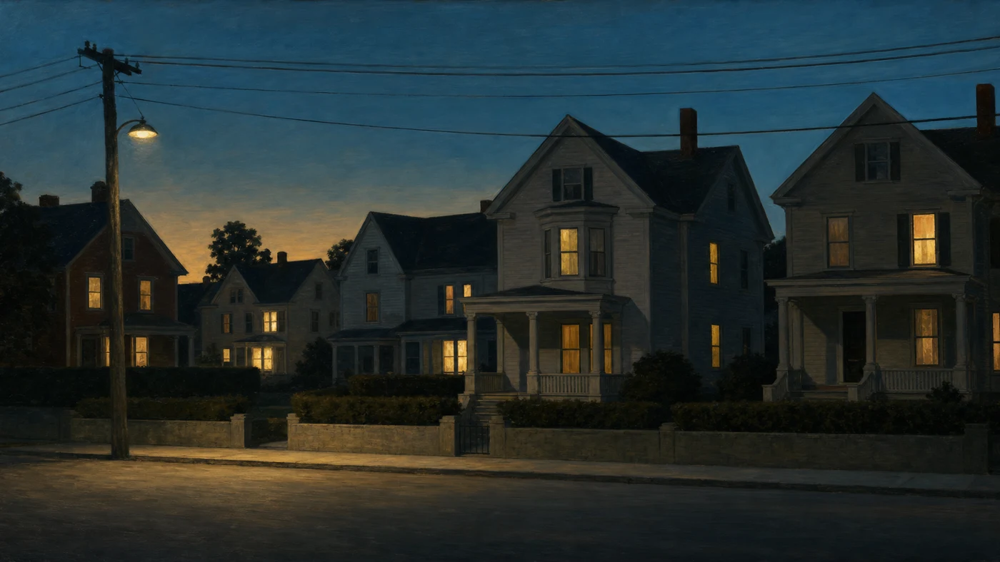

Novel · 2018
Give Them Unquiet Dreams
A luminous, beautifully told fairy tale grounded in history and elevated by spirit. Named one of Kirkus’s Best Books of 2019 — the novel readers most often ask me about first.
A Guide for Readers, Writers & Students
One writer keeps returning to the same waters — the same streets, faces, and preoccupations — and the work spreads out from there into books, classrooms, reading rooms, and a small press. This page is the map. Below you will find every published title with its Amazon listing, every website I keep, and every doorway into the wider Silver Current Press ecosystem, arranged the way a reader would look for them rather than the way the internet happens to file them.

Novels, story collections, and poems — each linked to its Amazon listing. For the deeper catalogue, essays, and reading‑group guides, see the full Books page.
Novel · 2018
A luminous, beautifully told fairy tale grounded in history and elevated by spirit. Named one of Kirkus’s Best Books of 2019 — the novel readers most often ask me about first.
Novel · Italian‑American Boston
A coming‑of‑age novel whose stubborn, tender protagonist descends from Defoe’s Moll Flanders and from a lineage of Boston women who refused to be tidied.
Novel · Grief & the Sacred
A novel about faith, family, and the small mercies that keep a life together after the loudest things have gone quiet.
Poetry · Selected Poems
Twenty years of poems gathered under one cover — water, fire, memory, and the thin places where the living and the dead keep company.
Stories · Silver Current Press
A collection built on recurrence — the same faces returning under new names, the ordinary revealed as holy in the middle of an ordinary afternoon.
Stories · The Aiden Cycle
Selected stories tracing a single family across decades and generations — the linked‑story mode Silver Current Press keeps returning to.
Stories · Early Collection
The story collection where the recurring images first surface — stigmata as ordinary stains, sunlight as hellfire, and mercy as the shape a life takes when nothing else works.
Stories · Later Collection
A darker companion to Assumptions — stories about what people let themselves not see, and what refuses to stay hidden anyway.
Also on the shelf: the teaching titles, the anthology credits, and the earlier chapbooks. See the full Books page or the Amazon Author Page for the complete list.
The publishing house, its literary gathering place, and the library it curates.
The independent press I founded to publish literary fiction, poetry, and nonfiction, including my own work.
Visit the pressOne page for the whole of the teaching work: the literary salons, the ten-session creative-writing course, memoir consulting, and self-paced resources for adult writers and secondary-school teachers. All live teaching is in person in the Philadelphia region.
Visit the teaching hubNamed for a Boston street address that keeps resurfacing in my fiction, this is where serious readers and writers gather for courses, craft talks, and a standing invitation to argue about books.
Enter the salonA growing shelf of annotated short fiction for readers and students.
Browse the libraryClassroom handouts and printable teaching notes, kept live for students and fellow teachers alike.
Open the whiteboardA sample of published work — the story collection All We Ever Needed, an essay on themes of mercy, and a look at the wider catalog.
View the sampleCourses, companions, and a live tool informed by three decades of classroom experience.
Ten sessions on developing a story, informed by thirty years in the classroom.
Explore the courseA workbook that accompanies the course, with exercises and annotated examples.
Open the companionField guides written from the other side of the slush pile, one for each form Silver Current Press publishes.
What actually happens to a memoir manuscript after you hit submit — written for writers tired of guessing.
Read the guideA short-story writer’s field guide to Silver Current Press — what we’re looking for, and what quietly gets a manuscript rejected.
Read the guideNotes from the other side of the slush pile, after decades of reading — and judging — poetry submissions.
Read the guideA submission-side companion to Publishing Poetry — what to send, how to send it, and what happens next.
Read the guidePress materials for journalists, reviewers, and booksellers, including bios, high-resolution covers, and selected blurbs.
Open the press kitEvery book I’ve published, gathered under one listing — the fastest way to see the whole shelf at once.
See the booksLiterary fiction, poetry, and craft notes delivered straight to your inbox — including a free weekly serialization of Give Them Unquiet Dreams, one chapter at a time, exactly as a reader in 1978 might have waited for the next installment. Forthcoming: new essays, stories, and poems as they're finished.
Subscribe for freeThe full catalog of craft handouts, literary-analysis workbooks, and downloadable essay editions in one storefront — instant delivery, no classroom required.
Browse the shopReader reviews, ratings, and the full bibliography in one place.
See the reviewsProfessional background, teaching history, and editorial work.
Connect on LinkedInBooks, essays, sample writing, and the press kit — the home base this very map lives on.
Back to the homepageGet The Quiet Craft: A Working Writer's Notebook — an expanded collection of working notes on fiction, poetry, and memoir craft — free, plus occasional word of new essays, poems, and guides. No spam, unsubscribe anytime.
Join the Circle & Get the Booklet